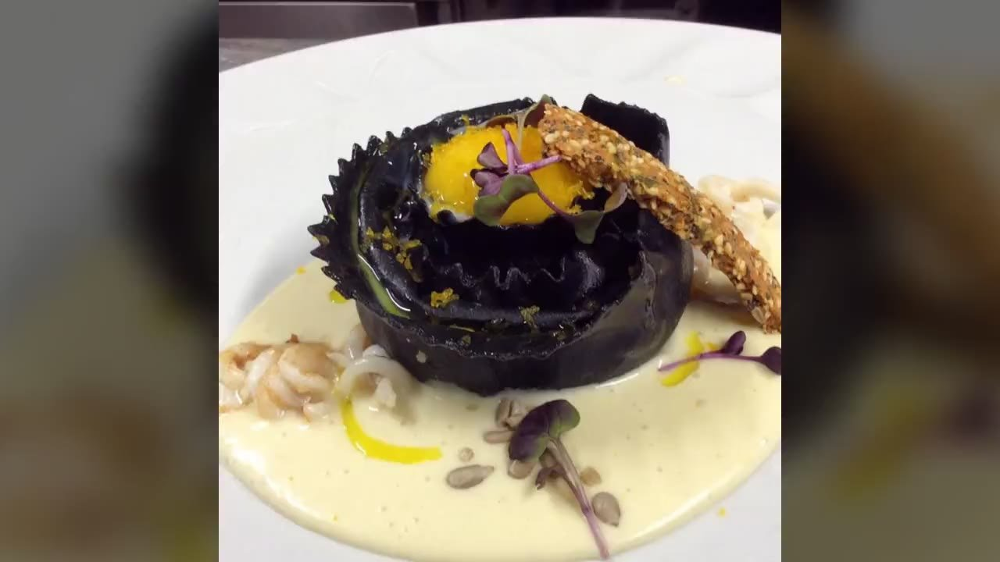
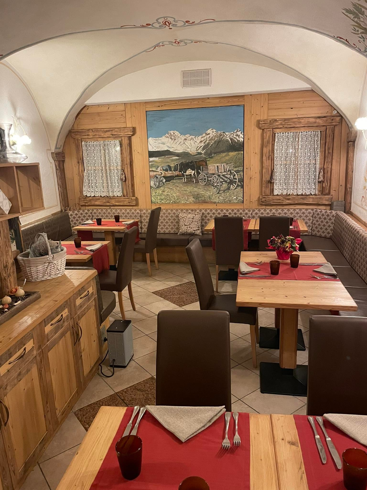
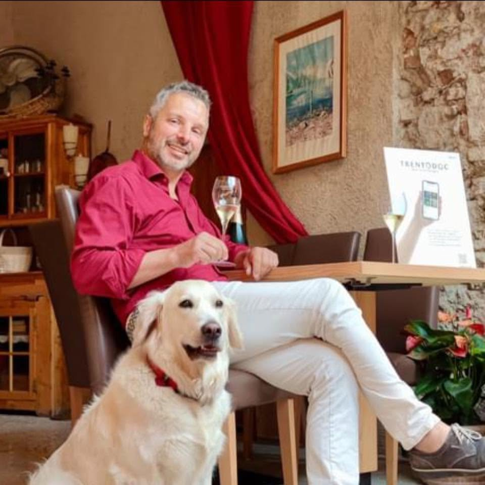

Patron Chef Aldo Tiboni
Cucina di pesce e carne, tra tradizione trentina e sapori del mare. Nel cuore di Arco, a due passi dal Lago di Garda.
4,5/5 · oltre 240 recensioni tra le migliori tavole di Arco
La nostra storia
Il Ritratto nasce dalla passione di Aldo Tiboni per una cucina schietta e curata, dove il pesce fresco e le carni selezionate incontrano la tradizione del territorio. Ogni piatto è pensato come un piccolo quadro: materie prime di stagione, tecnica misurata, presentazione che invita ad accomodarsi.
Una sala intima e calda — volte affrescate, legno di montagna, tavoli raccolti — dove l'accoglienza trentina incontra la cucina di mare. Ad Arco, sul Lago di Garda.

Foto sala · da inserireLa Carta
Pesce, carne e tradizione. La carta cambia con le stagioni e con il pescato del giorno.
La carta cambia con le stagioni e con il pescato del giorno. Per i menù degustazione, chiedi in sala.
Carico il menù…

Foto chef · da inserireIl Patron Chef
«Cucino come dipingerei un ritratto: pochi tratti, quelli giusti, per far emergere la materia prima.»
Aldo Tiboni guida la cucina del Ritratto con l'ossessione per la qualità e il rispetto delle stagioni. Dal pesce lavorato con delicatezza — tartare, crudi, cotture precise — alle carni scelte accompagnate da salse e contorni del territorio.
Aldo TiboniPatron Chef
Galleria
Un assaggio, in immagini — dai crudi di mare ai piatti di pesce dello chef.
Dicono di noi
«Cucina creativa e piatti presentati magnificamente. Un'esperienza di alto livello.»
«Pesce freschissimo e menù degustazione da provare assolutamente. Servizio impeccabile.»
«Atmosfera intima e accogliente, si mangia benissimo. Torneremo di sicuro.»
Contatti
Solo cena · È gradita la prenotazione. Disponibilità per cene di gruppo.